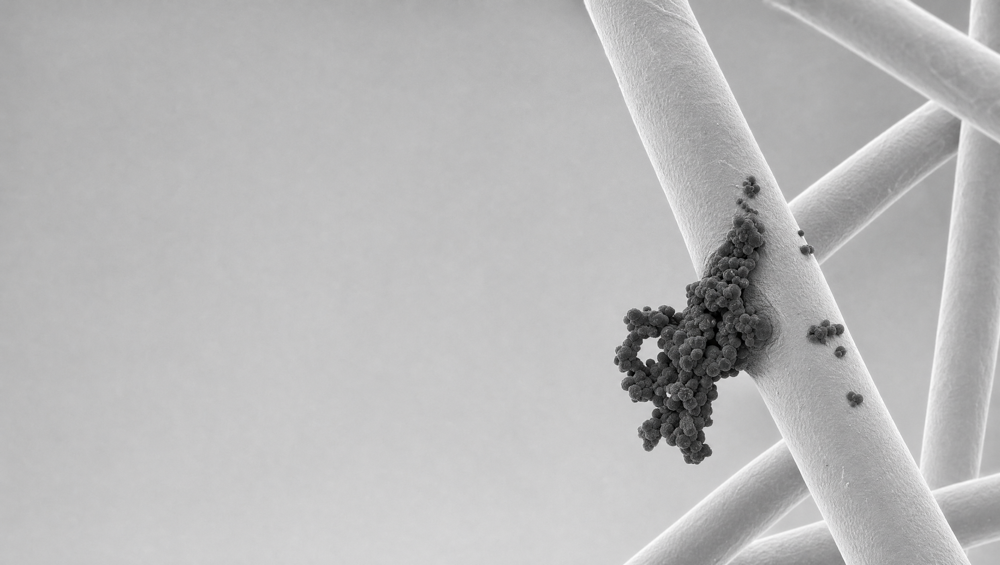

Up here the air is as clean as it gets. Proven first in air — the same physical mechanism carries across water, protective wear, food packaging and medical devices.
The microbes and smoke in the air, the PFAS in water, the biofilm on a surface — completely different problems that mostly share one trait: a negative charge.
NanoFlashing™ is a patented permanent positive polarity (3P) technology, engineered into the material. It attracts and captures ultrafine particles, wildfire smoke, PFAS, and pollen through a physical mechanism.